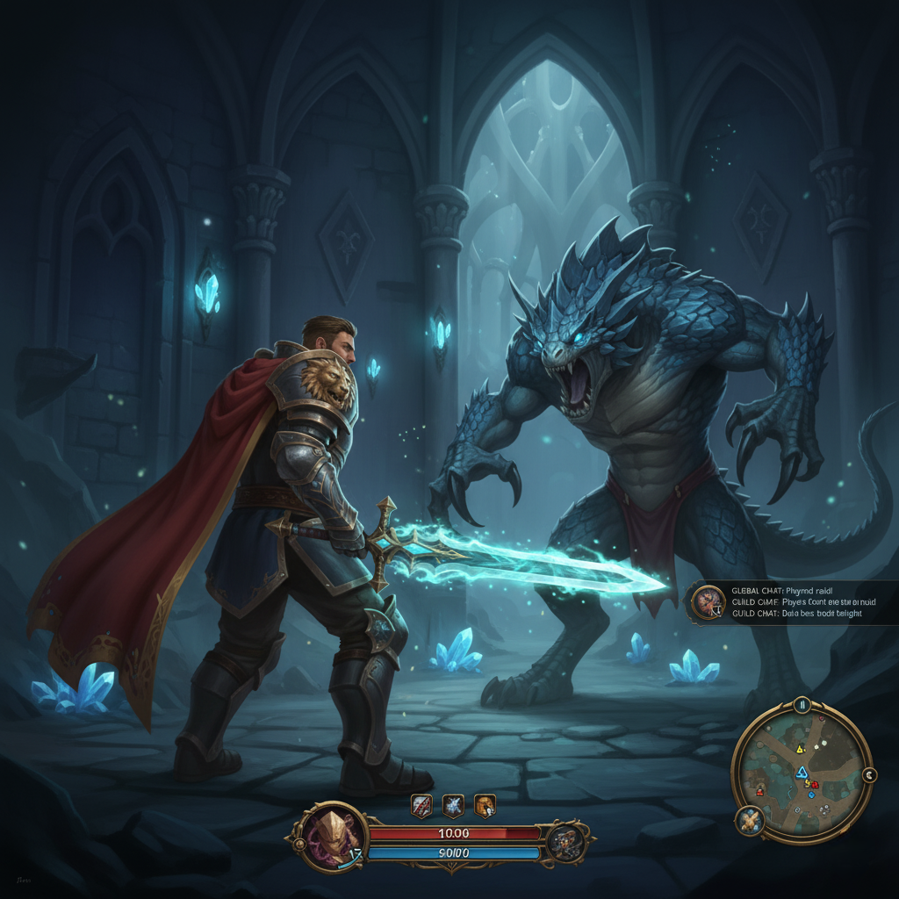

Sobre el Juego
Eternal Realms es un MMORPG masivo en línea donde miles de jugadores coexisten en un mundo persistente. Elige entre clases como Guerrero, Mago, Pícaro o Clérigo, forma parte de guilds poderosas, participa en raids épicas contra jefes míticos, y compite en arenas PvP. Explora continentes vastos, recolecta recursos, crea ítems legendarios y construye tu legado en este universo de fantasía interminable.
Características Principales
- Mundo abierto con exploración infinita y eventos dinámicos.
- Sistema de guilds con territorios, guerras y alianzas.
- Modo PvP competitivo con rankings globales.
- Crafting y economía player-driven.
- Actualizaciones mensuales con nuevo contenido.
Lore del Mundo
En los albores de los tiempos, los dioses antiguos forjaron los Eternal Realms como un paraíso para las razas mortales. Pero la ambición de un dios caído, conocido como el Devorador de Almas, rompió el equilibrio. Ahora, portales dimensionales se abren, liberando hordas de criaturas oscuras. Los héroes deben unirse para restaurar la paz, explorando ruinas olvidadas, aliándose con razas míticas y desentrañando profecías ancestrales. Cada decisión de los jugadores moldea el destino del mundo, creando una historia viva y cambiante.
Clases Detalladas
- Guerrero: Maestros del combate cuerpo a cuerpo. Especializados en tanques o DPS, usan espadas, hachas y armaduras pesadas para proteger a sus aliados o devastar a los enemigos.
- Mago: Controladores de la magia arcana. Lanzan hechizos de fuego, hielo y rayos, causando daño masivo desde la distancia. Ideales para PvP y raids.
- Pícaro: Expertos en sigilo y velocidad. Utilizan dagas, trampas y venenos para emboscadas letales. Perfectos para exploración y PvP furtivo.
- Clérigo: Guardianes de la vida y la luz. Curan heridas, resucitan compañeros caídos y protegen con barreras divinas. Esenciales en grupos y batallas prolongadas.
Modos de Juego
Además del mundo abierto, Eternal Realms ofrece modos especializados: PvP en arenas 3v3 o batallas campales, raids semanales con recompensas épicas, y dungeons instanciadas para grupos pequeños. La economía se basa en el trueque y mercados player-run, donde los ítems raros pueden valer fortunas virtuales.
Para más imágenes y videos, visita la galería.